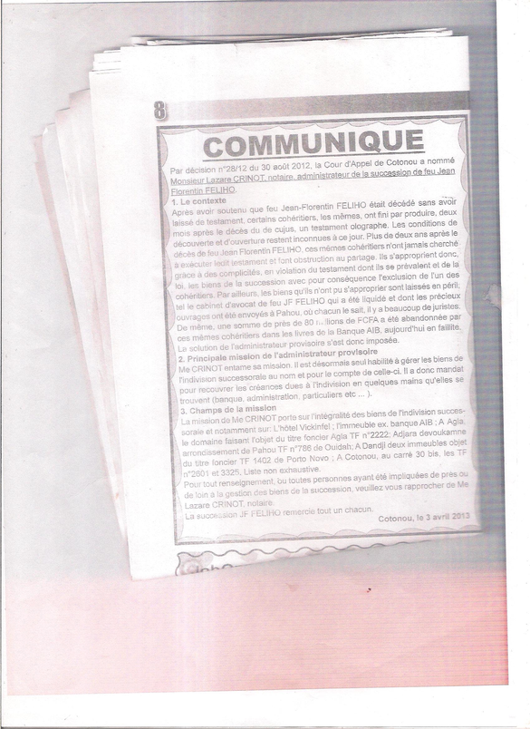

1. Synthèse exécutive
La présente note démontre, pièces à l'appui, que l'argument du notaire Félix A. BALLEY selon lequel les estimations immobilières « relevaient des estimations faites par leur feu père » est une fabulation. Cette conclusion ne repose plus seulement sur l'absence de pièce-source émanant du de cujus, ni sur la divergence des valorisations retenues : elle s'appuie désormais sur un troisième axe, plus radical, qui supprime le canal même par lequel le notaire prétend avoir reçu ces évaluations.
Le communiqué de la succession JF FELIHO du 3 avril 2013 — pièce publique, datée et signée — ne mentionne nulle part Me BALLEY. Il identifie au contraire un autre notaire, Me Lazare CRINOT, comme administrateur de la succession, et indique que le testament olographe a été produit tardivement par certains cohéritiers, dans des conditions de découverte et d'ouverture qui « restent inconnues à ce jour ». Dès lors, le notaire BALLEY n'apparaît, dans cette pièce, ni comme dépositaire du testament, ni comme administrateur de la succession, ni comme interlocuteur successoral naturel du de cujus.
2. L'argument à réfuter et le triptyque de preuves contraires
L'argument du notaire, tel qu'il ressort du PV n° 2 d'audition du 19/03/2025, se résume à une formule ramassée :
« Les montants relevaient des estimations faites par leur feu père. »
Cette formule déplace la source de la vérité de l'acte vers la parole du défunt et déresponsabilise le notaire en imputant l'estimation à un tiers non confrontable. Elle est prise en défaut sur trois axes complémentaires, dont le troisième est l'objet principal de la présente version :
Absence de pièce-source du de cujus
L'écrit manuscrit du 12/07/2007, seule pièce où le de cujus s'exprime sur un bien, ne contient pas les montants avancés par le notaire. Là où le de cujus parle réellement, les chiffres du notaire n'apparaissent pas ; là où les chiffres du notaire apparaissent, le de cujus ne parle pas.
Divergence radicale des valorisations
Le certificat d'acquit, le jugement et le manuscrit du 12/07/2007 ne concordent pas entre eux, ni avec les montants du PV. Un de cujus qui parle ne se contredit pas sur ses propres biens.
Absence de lien successoral établi
Aucune pièce connue ne place le notaire en position identifiable de recevoir du de cujus, personnellement, les évaluations qu'il lui attribue. Cet axe est développé ci-après.
3. L'axe nouveau : absence de lien entre le de cujus et Me BALLEY
Le communiqué du 3 avril 2013 apporte trois éléments probatoires qui, pris ensemble, désignent l'absence de canal de transmission entre le de cujus et le notaire BALLEY.
3.1 Le testament n'est pas présenté comme remis à Me BALLEY
Le communiqué indique que « certains cohéritiers [...] ont fini par produire, deux mois après le décès du de cujus, un testament olographe » et que « les conditions de découverte et d'ouverture restent inconnues à ce jour ». Le testament n'apparaît donc ni comme déposé chez BALLEY, ni comme sorti de ses archives, ni comme transmis par lui. Le canal notarial classique — dépôt du testament chez un notaire — n'est pas établi pour cette pièce.
3.2 Un autre notaire est identifié comme figure centrale de la succession
Le communiqué identifie Me Lazare CRINOT, notaire, nommé administrateur de la succession par décision n° 28/12 du 30 août 2012 de la Cour d'Appel de Cotonou. Il précise que « Me CRINOT entame sa mission. Il est désormais seul habilité à gérer les biens de l'indivision successorale ». Sur cette pièce, le notaire investi d'une fonction successorale identifiable n'est pas BALLEY, mais CRINOT. La qualité de « mandataire des héritiers » que s'attribue BALLEY dans le PV se heurte frontalement à la mise sous administration judiciaire de la succession.
3.3 Me BALLEY n'apparaît nulle part dans la pièce
Me Félix A. BALLEY n'est mentionné à aucun endroit du communiqué. Cette absence est probatoirement importante : elle ne prouve pas à elle seule tout le dossier, mais elle permet d'écrire avec force que cette pièce n'établit aucun lien identifié entre le de cujus et Me BALLEY — ni comme dépositaire du testament, ni comme administrateur de la succession, ni même comme interlocuteur successoral naturel. Si l'on ajoute à cela que le testament n'est pas présenté comme remis à BALLEY, le canal par lequel il aurait pu recevoir du de cujus les évaluations qu'il lui attribue devient introuvable.
Si BALLEY n'est, dans cette pièce, ni le dépositaire identifié du testament, ni l'administrateur de la succession, ni le notaire officiellement mis au centre de la gestion successorale, alors sa prétention selon laquelle les évaluations immobilières viendraient du de cujus devient encore plus fantaisiste. Car elle ne repose plus seulement sur l'absence de pièce-source du de cujus ; elle se heurte aussi à l'absence de canal plausible par lequel BALLEY aurait pu tenir personnellement du de cujus ces évaluations.
4. Tableau probatoire unifié — cinq axes de contradiction
Le tableau ci-dessous unifie les cinq axes de contradiction opposables à la déclaration du notaire BALLEY. La ligne « absence de lien » est autonomisée : c'est l'axe nouveau qui achève la démonstration.
| Déclaration / position du notaire | Preuve contraire | Constat imposé par les pièces | Ce que la BAC devait faire | Ce que la BAC fait ou omet |
|---|---|---|---|---|
| Le notaire fait remonter au de cujus l'origine des évaluations immobilières. | L'écrit manuscrit du 12/07/2007 (seule pièce du de cujus) ne contient pas ces montants. | Aucune pièce-source du de cujus ne confirme les montants avancés en PV. | Exiger la production de la pièce-source des évaluations attribuées au défunt. | La BAC ne requiert pas la pièce-source du de cujus. |
| Le notaire avance des montants censés refléter la valeur patrimoniale du défunt. | Triple divergence : certificat d'acquit ≠ jugement ≠ manuscrit du 12/07/2007. | Les évaluations ne cadrent ni avec la plume du de cujus, ni avec la réalité économique, ni avec la valeur retenue par le jugement. | Confronter les trois sources de valorisation et exiger une explication sur les écarts. | La BAC ne confronte pas les sources de valorisation entre elles. |
| Le notaire se présente en position de tenir personnellement du de cujus les évaluations qu'il lui attribue. | Le communiqué du 03/04/2013 identifie Me Lazare CRINOT comme administrateur de la succession ; le testament aurait été produit tardivement par certains cohéritiers ; les conditions de découverte et d'ouverture restent inconnues ; Me BALLEY n'est mentionné nulle part. | Aucun lien successoral établi ne place BALLEY en situation identifiable de recevoir du de cujus, personnellement, les évaluations qu'il lui attribue. | Constater l'absence de lien établi entre le de cujus et BALLEY, exiger la pièce-source de l'évaluation, vérifier par quel canal précis BALLEY prétend tenir ces montants, et relever qu'en l'état la déclaration repose sur une attribution sans support matériel identifiable. | Elle ne vérifie pas la chaîne de transmission alléguée entre le de cujus et le notaire. |
| Le notaire se prévaut d'une qualité de « mandataire des héritiers ». | Décision n° 28/12 du 30/08/2012 : nomination d'un administrateur provisoire, seul habilité à gérer l'indivision. | La mise sous administration judiciaire est exclusive de tout mandat privé non produit. | Requérir le mandat du notaire au jour de l'acte et la décision notifiée correspondante. | La BAC ne requiert pas le mandat allégué. |
| Le notaire omet toute mention des liquidités et biens en péril de la succession. | Communiqué : près de 80 millions FCFA abandonnés à la Banque AIB (en faillite) ; cabinet d'avocat liquidé. | L'inventaire réel du patrimoine contredit l'image d'une évaluation « paternelle » et complète. | Verser le communiqué au dossier et faire état des montants omis par le notaire. | La BAC ne confronte pas le notaire au communiqué du 03/04/2013. |
Lecture : sur les cinq axes, la ligne surlignée est l'axe nouveau. Elle n'invalide pas seulement l'argument par absence de pièce-source : elle le ruine par absence de canal de transmission, ce qui est plus radical.
5. Annexe : le communiqué du 3 avril 2013
Cette pièce est centrale pour l'axe nouveau : elle est publique, datée et signée de la succession, et elle n'établit aucun lien identifié entre le de cujus et Me BALLEY.

Transcription intégrale
COMMUNIQUÉ. — Par décision n° 28/12 du 30 août 2012, la Cour d'Appel de Cotonou a nommé Monsieur Lazare CRINOT, notaire, administrateur de la succession de feu Jean Florentin FELIHO.
1. Le contexte. — Après avoir soutenu que feu Jean-Florentin FELIHO était décédé sans avoir laissé de testament, certains cohéritiers, les mêmes, ont fini par produire, deux mois après le décès du de cujus, un testament olographe. Les conditions de découverte et d'ouverture restent inconnues à ce jour. Plus de deux ans après le décès, ces mêmes cohéritiers n'ont jamais cherché à exécuter ledit testament et font obstruction au partage. Ils s'approprient donc, grâce à des complicités, en violation du testament dont ils se prévalent et de la loi, les biens de la succession, avec pour conséquence l'exclusion de l'un des cohéritiers. Par ailleurs, les biens qu'ils n'ont pu s'approprier sont laissés en péril ; tel le cabinet d'avocat de feu JF FELIHO qui a été liquidé et dont les précieux ouvrages ont été envoyés à Pahou. De même, une somme de près de 80 millions de FCFA a été abandonnée par ces mêmes cohéritiers dans les livres de la Banque AIB, aujourd'hui en faillite. La solution de l'administrateur provisoire s'est donc imposée.
2. Principale mission de l'administrateur provisoire. — Me CRINOT entame sa mission. Il est désormais seul habilité à gérer les biens de l'indivision successorale au nom et pour le compte de celle-ci. Il a donc mandat pour recouvrer les créances dues à l'indivision en quelques mains qu'elles se trouvent (banque, administration, particuliers, etc.).
3. Champ de la mission. — La mission de Me CRINOT porte sur l'intégralité des biens de l'indivision successorale et notamment sur : l'Hôtel Vickinfèl ; l'immeuble ex-banque AIB ; à Agla, le domaine faisant l'objet du titre foncier Agla TF n° 2222 ; Adjara devoukamme, arrondissement de Pahou, TF n° 786 de Ouidah ; à Dandji, deux immeubles objet du titre foncier TF 1402 de Porto-Novo ; à Cotonou, au carré 30 bis, les TF n° 2601 et 3325. Liste non exhaustive.
Pour tout renseignement, ou toutes personnes ayant été impliquées de près ou de loin à la gestion des biens de la succession, veuillez vous rapprocher de Me Lazare CRINOT, notaire. La succession JF FELIHO remercie tout un chacun.
— Cotonou, le 3 avril 2013.
6. Qualification juridique de la fabulation en PV de police judiciaire
La fabulation prend une gravité particulière parce qu'elle est consignée dans un PV de police judiciaire. Le notaire BALLEY ne s'exprime pas dans un échange privé : il déclare sous le régime de l'enquête. Sa déclaration n'est pas une opinion : c'est un acte, dont l'inexactitude est désormais démontrée par trois axes convergents (absence de pièce-source, divergence des valorisations, absence de canal de transmission). La qualification pénale devient possible dès lors qu'il est établi que le notaire savait, ou devait savoir, que l'estimation ne provenait pas du de cujus — ce que le communiqué du 3 avril 2013 et la décision n° 28/12 du 30 août 2012 rendaient aisément vérifiables.
| Fait | Qualification envisageable | Fondement |
|---|---|---|
| Imputer au de cujus une estimation sans pièce-source ni canal de transmission | Fausse déclaration / déclaration mensongère en matière judiciaire | Code pénal art. 22 et 23 |
| Se prévaloir d'un mandat de « mandataire des héritiers » sans le produire | Usage de qualité non établie — captation d'autorité | Code pénal art. 303, 304, 305 |
| Consigner en PV une attribution au de cujus contredite par les pièces | Faux témoignage / recel de vérité en enquête | Code pénal art. 312 al. 2 ; art. 839 |
| Déclaration sciemment inexacte en PV de police judiciaire | Atteinte à la sincérité de l'enquête | CPP art. 39 ; loi 2006-14 art. 29 |
7. Conclusion et recommandations à la BAC
L'argument du notaire Félix A. BALLEY selon lequel les estimations immobilières « relevaient du feu père » est une fabulation, démontrée sur trois axes convergents : (i) aucune pièce-source du de cujus ne contient ces montants ; (ii) les valorisations sont radicalement divergentes ; (iii) aucun lien successoral établi ne place BALLEY en position de recevoir du de cujus, personnellement, les évaluations qu'il lui attribue. Consignée dans un PV de police judiciaire, cette fabulation ouvre la voie à la qualification pénale.
| N° | Action | Objet | Fondement |
|---|---|---|---|
| 1 | Confronter le notaire BALLEY au communiqué du 03/04/2013 | Lui imposer d'indiquer par quel canal précis il tient personnellement du de cujus les évaluations. | CPP art. 39 |
| 2 | Requérir la décision n° 28/12 du 30/08/2012 et le mandat de Me CRINOT | Établir l'office judiciaire post mortem et ruiner le « mandataire des héritiers ». | Loi 2006-14 art. 29 |
| 3 | Entendre Me Lazare CRINOT | Témoin direct de l'administration judiciaire et de la valorisation réelle. | CPP art. 39 |
| 4 | Verser le communiqué au dossier et l'annexer au PV | Constituer la pièce maîtresse de l'absence de lien. | CPP art. 39 |
| 5 | Qualifier pénalement les déclarations inexactes du notaire | Faux témoignage / fausse déclaration en PV de police judiciaire. | Code pénal art. 312 al. 2, 839 |
Pièces de référence
- PV d'audition n° 2 du 19/03/2025 ; réquisition n° 60/2025
- Communiqué de la succession JF FELIHO du 3 avril 2013
- Décision de la Cour d'Appel de Cotonou n° 28/12 du 30/08/2012
- Certificat d'acquit de droit
- Agla.pdf
- Écrit manuscrit du 12/07/2007
Textes applicables
- Code pénal béninois : articles 22, 23, 303, 304, 305, 312 alinéa 2, 839
- Code de procédure pénale (Bénin) : article 39
- Loi n° 2006-14 portant régime des personnes et biens en matière de successions : article 29